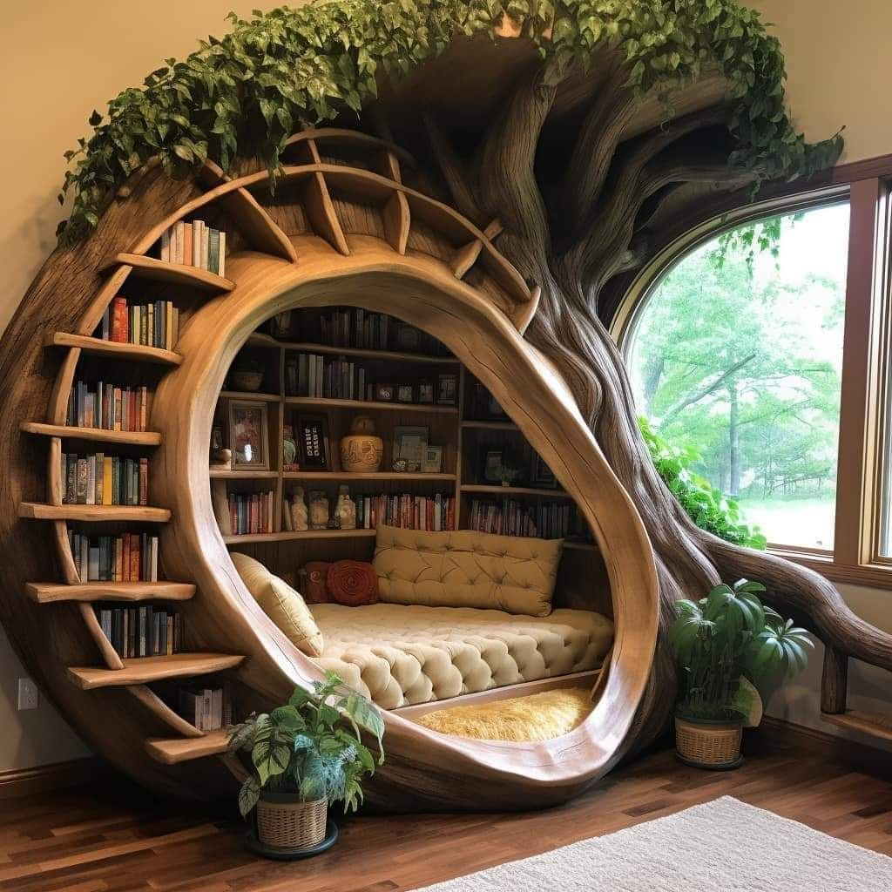
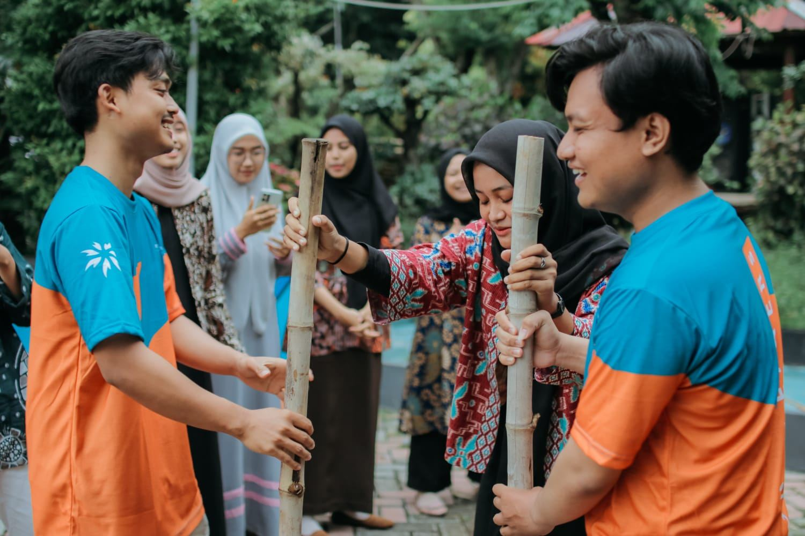
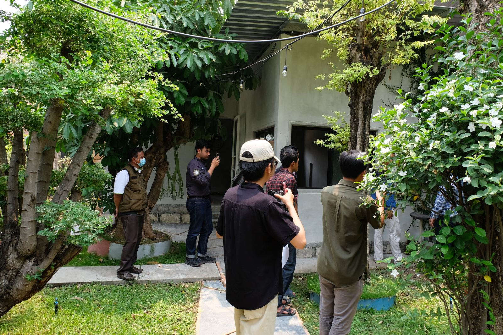
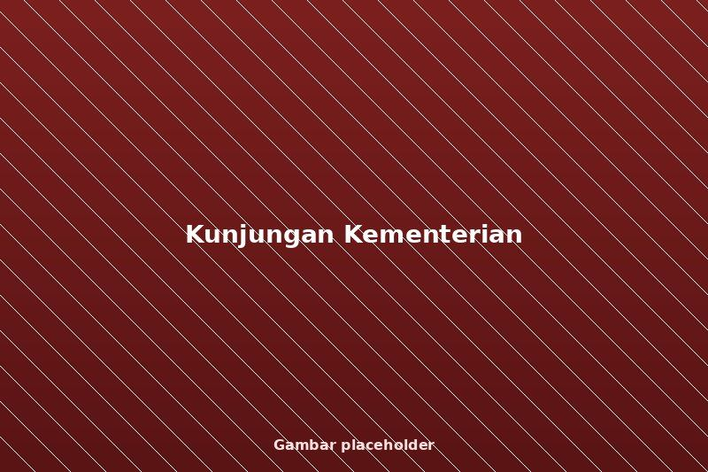
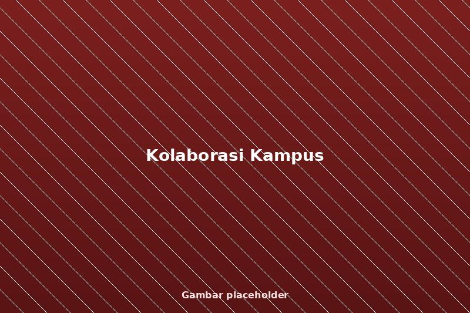

Kegiatan Sekolah
Kegiatan Literasi Pagi Siswa
Kegiatan literasi rutin untuk meningkatkan minat baca siswa.
Baca Selengkapnya →Yayasan Pendidikan Peduli Lingkungan dan Sosial Indonesia (PPLSI) adalah gerakan pendidikan kemasyarakatan yang berfokus pada pemberdayaan sosial, lingkungan, dan literasi berbasis komunitas sejak 2014.
Program pendidikan kemasyarakatan dan pemberdayaan sosial–lingkungan yang dirancang bertahap melalui fase Merintis, Berkembang, hingga Stabil.

Program literasi, edukasi lingkungan, dan penguatan kapasitas masyarakat berbasis kearifan lokal.

Produk sabun arang bambu karya bersama kaum difabel yang meraih penghargaan nasional Wirausaha Muda Mandiri.

Kolaborasi dengan komunitas, perguruan tinggi, industri, dan pemerintah untuk dampak berkelanjutan.
Tahun Inisiasi Yayasan
Legalitas Kemenkumham RI
Penghargaan Nasional
Mitra & Kolaborator
Prinsip dasar yang menjadi landasan etika, budaya kerja, dan pengambilan keputusan dalam setiap program yayasan.
Menjunjung kejujuran, konsistensi, dan transparansi dalam setiap tanggung jawab.
Menghargai waktu, proses, dan komitmen demi hasil yang berkelanjutan.
Bekerja bersama lintas komunitas untuk menciptakan dampak nyata.
Bertanggung jawab atas proses, hasil, dan dampak sosial program.
Peka terhadap isu sosial dan lingkungan sebagai dasar gerakan.

Dukung perubahan nyata dalam dunia pendidikan melalui program, kemitraan dan kontribusi bersama kami.
Dokumentasi kunjungan dan kolaborasi bersama pemerintah, perguruan tinggi, serta mitra pendidikan sebagai bentuk kepercayaan dan pengakuan terhadap peran yayasan.

Kunjungan dalam rangka peninjauan dan dialog penguatan kualitas pendidikan di lingkungan yayasan.

Silaturahmi dan dukungan pemerintah daerah terhadap pengembangan lembaga pendidikan yayasan.

Kegiatan akademik dan pengabdian masyarakat bersama mahasiswa dari berbagai perguruan tinggi.
Kegiatan literasi rutin untuk meningkatkan minat baca siswa.
Baca Selengkapnya →
Siswa SDN Balas Klumprik meraih juara tingkat kecamatan.
Baca Selengkapnya →
Upacara dan kegiatan edukatif memperingati Hardiknas.
Baca Selengkapnya →